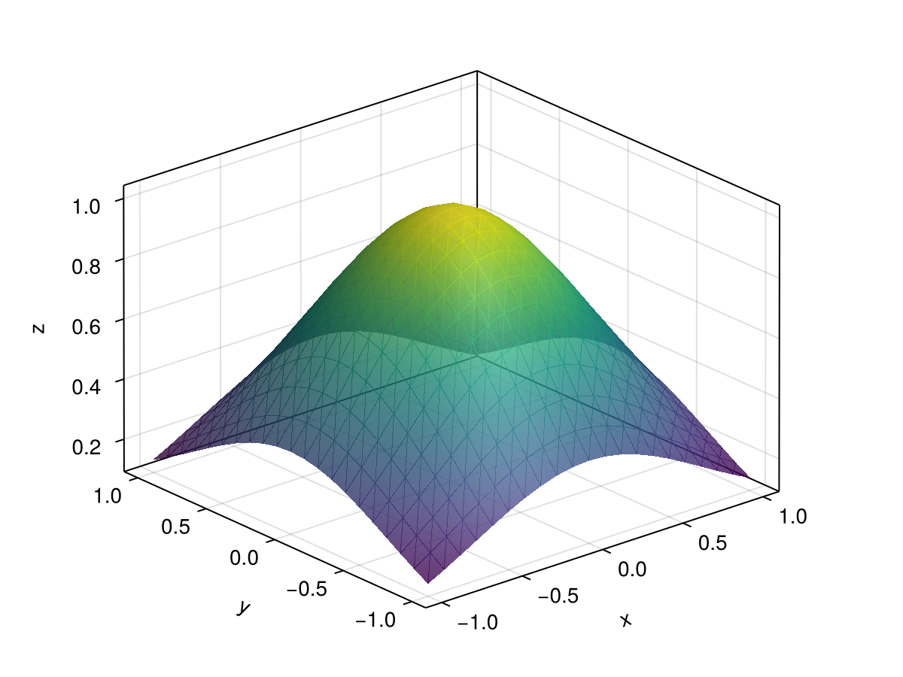
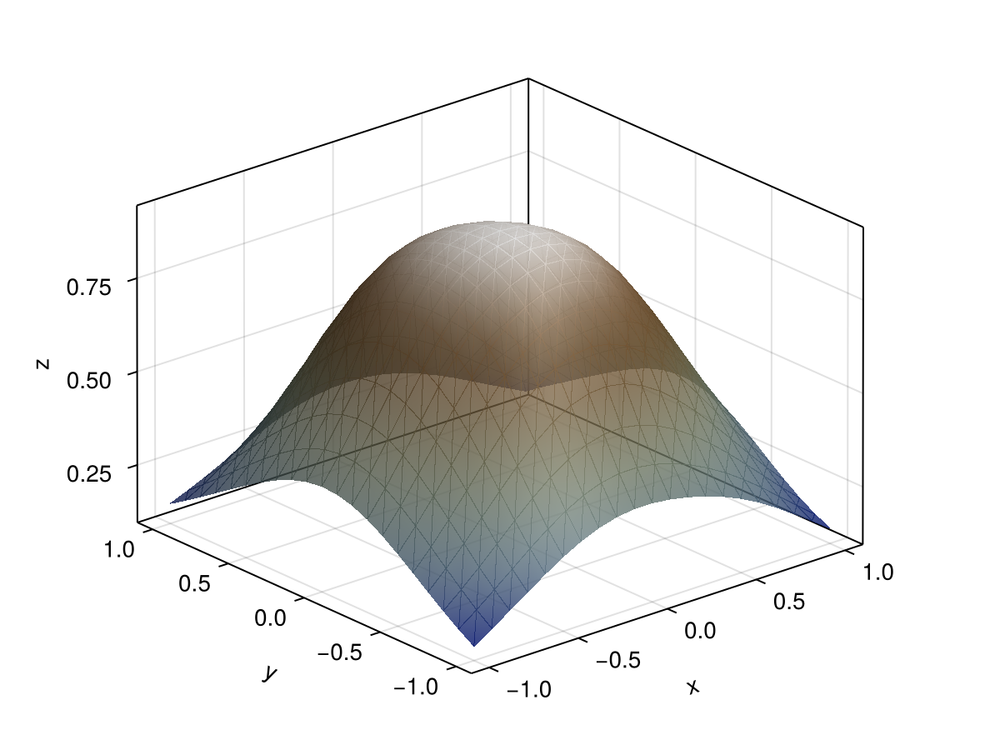

Training a Symbolic Neural Network
SymbolicPullback is a drop-in replacement for a Zygote-based pullback, so a SymbolicNeuralNetwork can be trained with the optimizers of GeometricMachineLearning without any further ceremony.
We approximate a Gaussian on $[-1, 1]\times[-1, 1]$ with a small feed-forward network.
using SymbolicNeuralNetworks
using AbstractNeuralNetworks: Chain, Dense, params, FeedForwardLoss
c = Chain(Dense(2, 3, tanh), Dense(3, 3, tanh), Dense(3, 1, tanh))
snn = SymbolicNeuralNetwork(c)
pb = SymbolicPullback(snn)SymbolicPullback(snn) uses a FeedForwardLoss; pass a NetworkLoss as the second argument for anything else.
How the pullback is built
The gradient a SymbolicPullback evaluates is fixed; how it is constructed is not, and the difference decides which networks it can be built for at all.
The direct route is to write down one symbolic expression for the loss of the whole network and differentiate it once per scalar parameter. Both halves of that grow badly. A Chain's forward pass is inlined layer into layer, so layer $k$'s expression contains layer $k-1$'s once per element it reads and the loss expression is $O(\mathrm{width}^\mathrm{depth})$ before anything is differentiated; differentiating it then walks the whole of it once per parameter. Four layers of width 16 — 626 parameters — reach a gradient expression of 2·10⁸ nodes, and the build never finishes.
Common subexpression elimination does not help with this. It runs at code generation, on an expression that has already been built and traversed; see Building Functions.
The way out is to stop inlining the composition. Each layer gets fresh symbolic variables for its own input, so the expressions built for it refer to that layer and to nothing upstream of it, and the composition happens when the pullback is evaluated — where it costs a function call per layer. Per layer this differentiates the scalar
\[s_k = \lambda_k \cdot f_k(x_{k-1}; \theta_k)\]
twice, in which $\lambda_k$ stands for the sensitivity of the loss to that layer's output: $\partial{}s_k/\partial{}x_{k-1}$ is $\lambda_{k-1}$, and $\partial{}s_k/\partial\theta_k$ is $\partial{}L/\partial\theta_k$. Neither a Jacobian nor a rank-3 parameter derivative is ever materialised, and the total symbolic material becomes a sum over layers rather than a product:
| layers | width | parameters | monolithic | layerwise |
|---|---|---|---|---|
| 2 | 4 | 22 | 6 652 | 792 |
| 4 | 4 | 62 | 388 700 | 2 520 |
| 6 | 4 | 102 | 12 848 828 | 4 248 |
| 4 | 8 | 186 | 8 253 148 | 11 736 |
| 4 | 16 | 626 | 209 455 964 | 68 760 |
Counted in expression nodes by scripts/codegen_comparison.jl, which also times both constructions.
This is what SymbolicPullback does by default. The layerwise keyword overrides the choice:
SymbolicPullback(snn, loss; layerwise = true) # demand it, error if it does not apply
SymbolicPullback(snn, loss; layerwise = false) # one expression for the whole network:auto, the default, composes layer by layer for every model that decomposes into more than one layer — see composes_layerwise for the measured crossover and why the default does not try to reproduce it exactly.
Layers
What sits between two layers is a seam: fresh symbolic variables standing for the layer's input, rather than the expression of everything upstream of it. By default that is one plain vector — the layer's state — because that is what a Dense maps to a Dense.
A layer may carry more than the state. GeometricMachineLearning's SymplecticEuler threads the parameters of the system through the chain alongside it, so it takes and returns a pair. Four functions say how such a layer meets the seam, and each defaults to the plain-vector construction:
| function | what it answers |
|---|---|
carried_variables | what fresh variables the carried data needs |
seam_value | what the layer is applied to at the seam |
state_expressions | which part of the output $\lambda$ pairs with |
seam_arguments | the run-time arguments of the generated kernels |
SymbolicNeuralNetworks.carried_variables(l::MyLayer) = (Symbolics.variables(:c, 1:length(l)),)
SymbolicNeuralNetworks.seam_value(::MyLayer, sx, sc) = (sx, sc)
SymbolicNeuralNetworks.state_expressions(::MyLayer, y) =
SymbolicNeuralNetworks.scalar_expressions(first(y))
SymbolicNeuralNetworks.seam_arguments(::MyLayer, x::Tuple) = (first(x), last(x))A layer declares all four together or none of them. The carried data is data, never a differentiation target: $\lambda$ pairs with the state, the seed is differentiated with respect to the state and the layer's parameters, and the carried variables become extra arguments of the generated kernels. See seam_interface.
A layer that carries something and has not declared these is where the construction declines — its output has more in it than the default can take apart, or it has no method for a bare vector at all — and SymbolicPullback falls back to the monolithic path. That fallback traces the chain from a plain vector, so it differentiates the map in which every layer defaulted what it carries: for a model whose carried data matters, declaring the seam is not only faster but the only construction that is right.
Losses
The layerwise construction needs one thing the monolithic one does not: the loss as a function of the network's prediction, so that the sweep has a value of $\partial{}L/\partial\hat{y}$ to start from. AbstractNeuralNetworks has no interface for that — a NetworkLoss is applied as loss(model, ps, input, output) — so the expression is obtained by applying the loss to a PassThroughLayer, a model whose prediction is its input.
That is right for a loss which reaches its model once and compares the result to output, and wrong for one that does something else: an autoencoder loss compares the prediction to the network's input, and so reads through a pass-through model as identically zero. Returning a zero gradient quietly would be the worst thing this could do, so the guessed expression is checked against the loss itself before it is used, and the construction falls back to the monolithic one when the two disagree.
A loss can say what its expression is instead, in which case it is used as given:
SymbolicNeuralNetworks.loss_expression(::MyLoss, ŷ, y) = ...See loss_expression.
The data
using GeometricMachineLearning
x_vec = -1.0:0.1:1.0
y_vec = -1.0:0.1:1.0
xy_data = hcat([[x, y] for x in x_vec, y in y_vec]...)
f(x::Vector) = exp.(-sum(x .^ 2))
z_data = mapreduce(i -> f(xy_data[:, i]), hcat, axes(xy_data, 2))
dl = DataLoader(xy_data, z_data)[ Info: You have provided an input and an output.using CairoMakie
fig = Figure()
ax = Axis3(fig[1, 1])
surface!(x_vec, y_vec, [f([x, y]) for x in x_vec, y in y_vec]; alpha = .8, transparency = true)
fig
Training
nn_cpu = NeuralNetwork(c, CPU())
o = Optimizer(AdamOptimizer(), nn_cpu)
n_epochs = 1000
batch = Batch(10)
@time o(nn_cpu, dl, batch, n_epochs, pb.loss, pb; show_progress = false); 0.838050 seconds (9.12 M allocations: 630.746 MiB, 9.74% gc time)fig = Figure()
ax = Axis3(fig[1, 1])
surface!(x_vec, y_vec, [c([x, y], params(nn_cpu))[1] for x in x_vec, y in y_vec];
alpha = .8, colormap = :darkterrain, transparency = true)
fig
Comparison with a Zygote-based pullback
The same training run with GeometricMachineLearning.ZygotePullback:
pb2 = GeometricMachineLearning.ZygotePullback(FeedForwardLoss())
@time o(nn_cpu, dl, batch, n_epochs, pb2.loss, pb2; show_progress = false); 0.838273 seconds (11.41 M allocations: 841.561 MiB, 9.87% gc time)For a plain feed-forward loss like this one there is no speed-up to be had — Zygote handles it perfectly well. The case for SymbolicNeuralNetworks is losses that contain a derivative of the network, such as those of Hamiltonian neural networks, where reverse-mode AD has to differentiate through a derivative; see Double Derivatives.